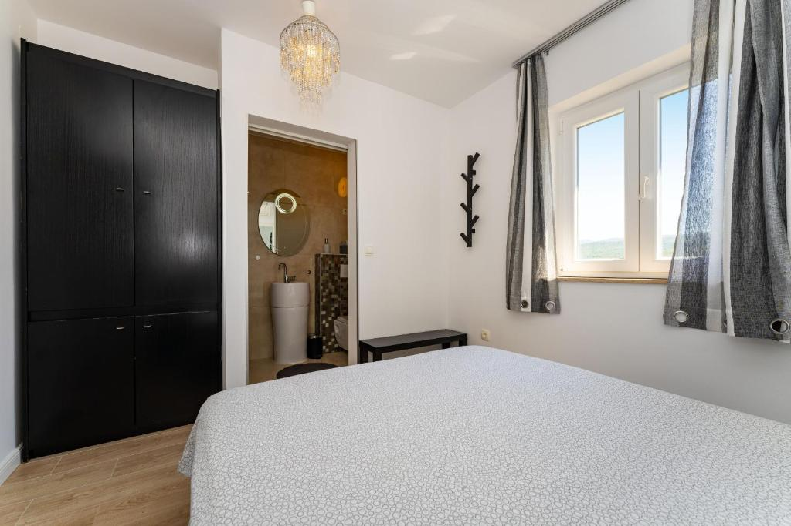

Ovdje možete zaviriti u ugođaj koji Villa Sučić pruža svojim gostima. Od prostranog vrta i bazena do udobnih unutarnjih prostora, svaki kutak vile dizajniran je za potpuni odmor i uživanje.
Bilo da volite ispijati jutarnju kavu s pogledom na planinu, večerati na terasi pod zvjezdanim nebom, ili se opustiti uz bazen – ova galerija donosi djelić tog iskustva.
Naša vila u slikama
Pogledajte slike eksterijera i interijera, detalja kuće, okoliša, kao i aktivnosti koje možete doživjeti u blizini.
Dnevni boravak
Mjesto gdje ćete provoditi većinu vremena s obitelji i prijateljima. Prostran i svijetao, opremljen je udobnim kaučem, televizorom i izlazom na terasu. Idealno za opuštanje nakon dana punog aktivnosti.
Kuhinja
Potpuno opremljena kuhinja s hladnjakom, štednjakom, pećnicom, perilicom posuđa i svim potrebnim priborom. Savršena za pripremu domaćih jela ili jednostavan doručak s pogledom na prirodu.
Roštilj
Uživajte u pripremi jela na otvorenom uz roštilj smješten na terasi. Idealno za ljetne večere, okupljanje uz hranu i vino, s pogledom na zalazak sunca i planinu Velebit.
Bazen
Privatni bazen uz kuću nudi pravo ljetno osvježenje i opuštanje. Oko bazena nalaze se ležaljke i sunčalište, savršeno za odmor, sunčanje i uživanje u miru i tišini.
Jednokrevetna Soba

Mirna i udobna soba za solo putnike ili djecu. Opremljena kvalitetnim krevetom i prostorom za odlaganje stvari – pruža potpunu privatnost i ugodan san.
Dvokrevetna Soba
Prostrana dvokrevetna soba s pogledom na zelenilo. Udoban krevet, puno prirodnog svjetla i toplina interijera čine je savršenom za odmor u dvoje.
Video Snimljen s Dronom
S ovim videouratkom možete vidjeti kako izgleda cijela okolina.
Okruženje
Ovo je predivan zvuk ptičica koje ćete čuti u okolini.